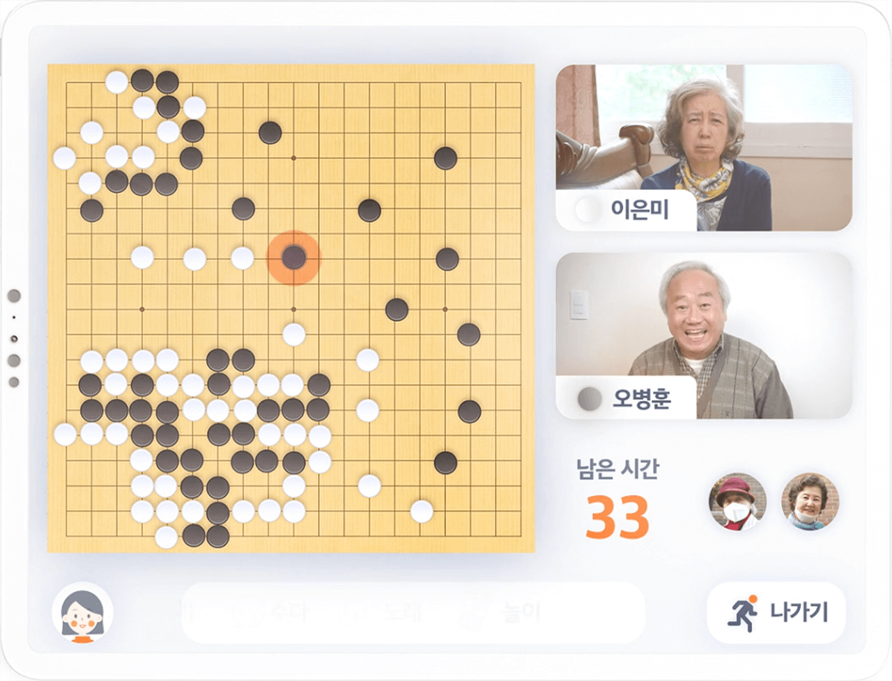
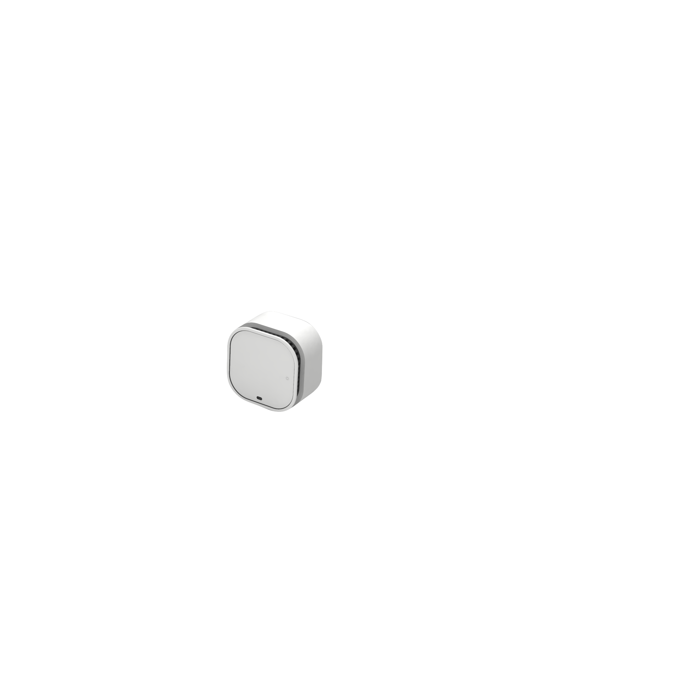
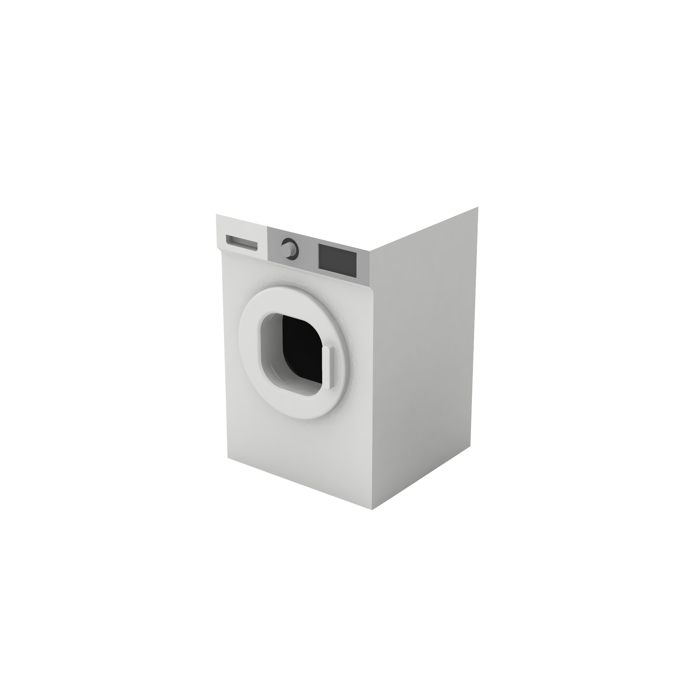

-
우리동네 사랑방
Team Project | 2020.9-2020.12감염병의 대유행, 신체적 문제로 인한 거동의 불편함, 사회적인 소외 문제들.
이들 외에도 우리 주변의 어르신들을 곤경에 처하게 하는 문제들이 존재합니다.
따라서 저희는 어르신들의 시지각 방식 또한 사회적 커뮤니케이션의 형성 방법에 근거하여
지역 기반의 대화 공동체를 만들어나갈 수 있는 공간을 제안하고자 합니다.감염병의 유행으로 노년층은 훨씬 힘든 시간을 보내고 있습니다.
젊은 세대들은 여러 플랫폼으로 오프라인 만남과 강의 등의 서비스를 대체하고 있는 것에 비해
노년층은 스마트 디바이스에 대한 접근성이 낮을 뿐만아니라
기존 디지털 플랫폼의 인터페이스 디자인이 노년층에게 적절하지않기 때문입니다.어르신들께는 경로당과 같이 일상의 외로움을 극복하고 사람들과 함께할 수 있는 공간이 필요합니다.
공감대를 가진 주변 이웃들과의 커뮤니티를 통해 서로를 향한 보살핌이 필요합니다.
노화가 진행될수록 시력과 손가락을 이용한 세부조작이 어려워지므로 이를 고려한 인터페이스 디자인이 필요합니다.interview1
"다 똑같이 늙어가는
외로운 사람들인데"같이 늙어간다는 공감대
interview2
"아침먹고나면 적적해.
같이있으면 시간 금방 가."일상을 즐겁게 보내는
가벼운 소통interview3
"버튼도 너무 많고,
뭘 눌러야할지 모르겠어"세심하고 적극적인 탐색은 부담
우리동네사랑방은 지역 기반 플랫폼으로 사용자가 위치한 지역 사랑방으로 접속하게 됩니다.
연락처에 있는 사용자 또는 사용패턴에 적합한 방이 우선적으로 보여지게 되어 자연스러운 이웃 커뮤니티의 형성을 도울 수 있습니다. 노년층 이용자의 쉬운 선택을 위한 채널형 메인화면과 쉬운 조작을 위한 음성 인공지능 에이전트인 사랑방 손녀의 기능을 지원합니다. 사용자들은 대화를 나누고 있는 방 안에서도 함께 티비를 보는 등의 기능을 즐길 수 있습니다.See more details on Online Exhibition website
 -
약쏙
Team Project | 2020.3-2020.6기다리기 힘든 약국, 기억하기 어려운 복용
기다릴 필요 없이, 기억할 필요 없이
빠르게 약을 배송받아 바르게 약을 복용하는 나만의 약국감염병의 유행으로 비대면 서비스의 중요성이 부상하고 있습니다.
자가격리 상황으로 인해 의료 서비스 이용이 어려운 사람, 거동이 불편하여 약국에서 처방을 위해 기다리는 시간이 힘든 사람 등
다양한 사람들을 위해 처방받은 약을 편하게 배송받을 수 있는 서비스가 필요합니다.
또한 점점 늘어가는 약의 가짓수에 일일이 복용법을 기억하고 지키는데에 불편함이 있어
실시간으로 복약을 지도해주는 서비스 또한 필요합니다.interview1
"매번 같은 처방인데,
매달 약국을 방문하기가
귀찮아요."약국 방문의 불편
interview2
"어머니 모시고
같이 몇 십분을
기다리려니 지쳐요."약국에서의 기다리는 시간
interview3
"나이가 늘어날수록
약이 너무 많아요.
먹었는지도 기억하기 어려워요."실시간 복약지도의 필요성
원격의료 처방전 혹은 기존 서면 처방전의 QR코드를 통해 처방약을 주문할 수 있습니다.
자동으로 해당 약 조제가 가능한 가장 가까운 약국이 배정되며 실시간으로 배송정보를 확인할 수 있습니다.
배송 후에는 앱 내 서명을 통해 마지막 확인 절차를 완료할 수 있습니다.처방전없이 증상에 따른 일반의약품 또한 주문할 수 있습니다.
큰 증상 분류를 통해 선택할수도, 음성 챗봇을 통해 선택할수도 있습니다.
현재 복용중인 약의 성분과 충돌되는 성분이 있는 약은 후순위로 밀려나며 선택시 경고 안내가 보여집니다.복약 이력이 실시간으로 기록되며 관리되어 효과적인 건강 관리가 가능합니다.
모바일 기기 내 알림창으로 약의 이미지와 복용법이 표시되며 복용시에 알림창 체크를 통해 확인됩니다.
처음 복용하는 성분이 있을 때에는 복용 후 일정 시간이 지나면 부작용을 체크할 수 있습니다.See more details on PDF file
-
제습도어 리센스
Collarborative Project | 2019.9-2019.12시간의 압박감과 불쾌한 습기가 가득한 건조기없는 빨래.
리센스의 제습기능을 통해 건조기없이도 평화롭고 자유로운 빨래가 가능합니다.
세탁기 도어 교체를 통한 평화롭고 자유로운 생활습관을 제시합니다. 1인 가구의 증가와 함께 1인 가구를 위한 주거환경은 점점 좁아지고 있습니다.
좁은 원룸에 빌트인 세탁기를 사용하는 사용자들에게는 건조기를 감당할만한 공간이 없습니다.
건조기 없는 사용자들에게 빨래는 세탁이 돌아가는 2-3시간을 집안에서 꼼짝없이 기다려야하는 시간이 포함되어있습니다.
건조기가 없는 빌트인 세탁기를 사용하는 사용자들에게 빨래라는 가사행위에 조금이나마 자유와 휴식을 줄 수 있도록
리센스는 빌트인세탁기의 도어를 교체하여 제습기능을 제공합니다.건조기 설치가 어려운
좁은 원룸의 주거형태습기가 가득찬 주거공간
세탁완료 후 일정시간 방치시
곰팡이균 증식세탁이 끝날때까지
기다려야하는 불편단, 리센스 도입 시 본래 투명한 세탁기 도어가 불투명하게 바뀌어
투명한 도어를 통해 얻을 수 있었던 세탁 관련 정보를 차단하게 된다는 취약점이 발생합니다.
따라서 제습도어라는 신규 컨셉에 맞는 인포그래픽 인터페이스를 불투명한 도어에 도입함으로써
세탁 관련 정보를 사용자에게 제공하고자 합니다.세탁기는 주거공간에 늘 존재하는 가전인만큼 사용자로 하여금 긍정적인 감정과 함께
인지적 부담을 덜어주기 위해 캄테크 철학에 부합하는 인터페이스 디자인을 도입하였습니다.
“한 눈에 쉽게 알아볼 수 있는" “glanceable”한 디자인으로
도트 형태, 단순한 색상으로 구성된 은은한 LED를 통해 제품 인터페이스를 구성하였습니다.제품의 제습기능 총 시간인 12시간에 맞춰 12개의 도트로 인터페이스를 구성하였습니다.
기존의 투명한 도어로 관측이 가능했던 세탁기 내에 물이 채워지는 모습,
세탁이 진행 중인 모습과 제습도어의 상태 표시를 위해 제습이 진행중인 상황, 제습기의 만수를 알려야하는 상황과
마지막으로 오류가 발생한 상황의 총 5가지 상태를 인터페이스로 구성했습니다.See more details on paper for HCII2020

o eun chae
Based on Seoul, Korea
Contact Email dololoccc@gmail.com
방문해 주셔서 감사합니다.
제 작업들은 모두 아주 단순한 구조의 인터렉션과 디자인들로 이루어져 있습니다. 누구나 처음 이용하더라도 매끄럽고 쉽게 진행되는 사용자 경험을 디자인하는 것이 일상에서 서비스를 마주할 때에 안전하고 편안한 감정이 들도록 하는 길이기 때문입니다. 항상 더 하는 것보다 덜어내어 쉽게 만드는 것에 열중합니다.
본 웹사이트에 정리된 내용은 극히 일부로 각 프로젝트 소개 글 마지막에 연결되어 있는 사이트 혹은 파일로 세부사항을 확인할 수 있습니다. 이력서 열람은 아래에 링크를 통해 가능하며 궁금하신 점은 위에 기재된 이메일로 보내주시면 감사하겠습니다.